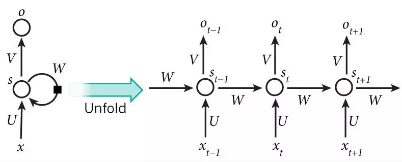

Code Your Own RNN with NumPy

Table of Contents
What is a Recurrent Neural Network and How Do They Work?
Neural networks data as independent, isolated events. In other words, we don’t treat and/or make use of sequential data. Therefore, in order to process a time-series data (e.g. accelerometer data from a seismometer) or a sequence of events (e.g. text) you would have to feed the entire sequence to the neural network at once!
This doesn’t make sense both on a computation-level and a human-level. Think about it, as you read text you are storing a subset of this text in your short-term memory; you are keeping the sequence of words that are relevant for your understanding of the sentence.
This is the idea behind Recurrent Neural Networks. A recurrent neural network (RNN) processes sequences by iterating through the sequence of elements and maintaining a state containing information relative to what it has seen so far. RNNs are called recurrent because they perform the same task for every element of a sequence, with the output being dependent on the previous computations.
In other words, data points are no longer processed in a single step. The network will loop over itself until it performs the same task on each element on the sequence. The RNN will reset itself only when it reaches the final element.
Let’s visualize this before going through an example. Below we see a typical RNN:

Left A single recurrent network, which is nothing more than a network with a loop. Right The same RNN but unrolled for visualization purposes.
$x_t$ and $s_t$ are the input and hidden state (both vectors), respectively, at time $t$. Matrices $U$, $V$, and $W$ are the parameters we want to learn from our data. And $o_t$ is the output vector computed using only the hidden state at time $t$. The hidden state, $s_t$, is calculated based on the previous hidden state ($s_t-1$) and the input at the current step, $x_t$:
$$s_t = f(U * x_t + W * s_t-1)$$
i.e. $s_t$ kept information on what happened from all of the previous steps. It can be thought as a memory object. Note that, unlike other typical neural networks, recurrent neural networks reuse the same parameters (weights) $U$, $V$, and $W$ during the training process. This makes sense since we are performing the same task on each element of the time sequence, $x_t$.
Our activation function, $f$, is defined either as an $tanh$ or $ReLU$. For example, when $f$ is defined as $tanh$, our hidden state becomes:
$$s_t = tanh(U * x_t + W * s_t-1)$$
Writting your own RNN using Numpy
Let’s do some programming to get a deep (pun intended) understanding of recurrent neural networks. To do this we will create a generic and simple RNN using Numpy. The objective of this exercise it to understand on a basic level how an RNN operates. We will not worry about using real data for now. Instead, let’s create random data and feed this to an RNN. We will say that our input vector has $32$ input features (this is what goes into our input layer) and we will have an output vector with $64$ features.
Below are the ingredients you’ll need and some psuedo code to get you started.
RNN ingredients:
1] Define the dimension of the input space. [This it the input layer of our neural network].
2] Define the dimension of the output feature space [Output layer of our neural networt].
3] Generate random noise as our input ‘data’ [We just want to get an idea of HOW this works].
Hint: Input vector should have dimensions (timesteps X input_features)
4] Define an initial state, $s_{t}$, of the RNN.
5] Create (random) weight matrices, $W$ and $U$.
6] Create a for loop. that takes in the input with the current state (the previous output) to obtain the current output.
Hint: Don’t forget about our activation function, $f$.
7] Update the state for the next step.
8] The final output should be a 2D tensor with dimensions (timesteps, output_features).
Pseudocode for RNN
# For the first timestep, the previous output isn’t defined;
# Thus, our initial state is set to zero.
state_t = 0
#Iterates over sequnce elements
for input_t in input_sequence:
output_t = f(input_t, state_t)
# The previous output becomes the state for the next iteration.
state_t = output_t
How this would look like in Python:
### Create fake data and store them as a tensor:
# Number of timesteps in the input sequence.
timesteps = 100
# Dimensionality of the input feature space
input_features = 32
# Dimensionality of the output feature space.
output_features = 64
# Input data is random for the sake of it
inputs = np.random.random((timesteps, input_features))
### RNN ###
# Initialize state: an all-zero vector
state_t = np.zeros((output_features))
# The RNN's parameters are two matrices W and U and a bias vector.
# Initialize random weight matrices
W = np.random.random((output_features, input_features))
U = np.random.random((output_features, output_features))
b = np.random.random((output_features,))
successive_outputs = []
for input_t in inputs:
# Combines the input with the current state (the previous output)
# to obtain the current output
output_t = np.tanh( np.dot(W, input_t) + np.dot(U, state_t) + b )
# Stores this output in a list
successive_outputs.append(output_t)
# Use for the next round:
state_t = output_t
# The final output is a 2D tensor of shape (timesteps, output features)
final_output_sequence = np.concatenate(successive_outputs, axis = 0)
Building a DNN in Keras
Before jumping in to defining an RNN using Keras, let’s remind ourselves what pieces we need to compile DNN using Keras’ high-level neural network API. The ingredients are:
Define a model. In TensorFlow there are two ways to do this: first, by using a Sequential class or second, with a functional API (which allows you to build arbritrary model structures). Given that the most common neural network configuration is made up of linear stacks, you’ll most likely use the first method more often.
Define your DNN by stacking layers We start from the input layer and sequentially add more layers: the hidden layers, and the output layer.(Hence, where the Class name came from). Basically, the more layers you stack together, the more complex model you define (but at the potential expense of overfitting and/or long computation times!).
One thing to keep in mind: each layer you define needs to be compatible with the next. In other words, each layer will only accept and return tensors of a certain shape.
Compile Before the training occurs, you need to define compile the model. To do this, use Keras’ compile method. This method takes in three arguments:
1) the optimizer - optimization algorithm (e.g. SGD, Adam, etc.); 2) the loss function the optimizer will try to minimize; and 3) a list of metrics (e.g. accuracy).
And that’s it! The last step is to train the model using Keras’ fit function. More on this when we run our own RNN in the next notebook.
With the above knowledge fresh in our memory we could replace our Numpy RNN (lines 17 - 39) with this ONE line:
For example:
from keras.models import Sequential
from keras import layers
from keras.layers import Embedding, Dense, SimpleRNN
model = Sequential()
model.add(SimpleRNN(10, input_shape=(3, 1)))
model.add(Dense(1))
Using TensorFlow backend.
Let’s look at this line by line:
Line 5: Defined our model architect using a Sequential class.
Line 6: Added our RNN layer (which also serves as our input layer).
Line 7: Added a fully connected (i.e. Dense) layer as our output layer.
The model.summary() function is a convenient way of checking how our deep neural network textually looks like. It provides key information of our architecture such as:
the layer type and the order of the layers from input (first row) to output (bottom row before the ‘=’);
the shape of the tensor for each output (and thus, what is going into the next layer);
and the number of weights (here labeled ‘parameters’) per layer along with a summary of the total number of weights.
For example:
model.summary()
_________________________________________________________________
Layer (type) Output Shape Param #
=================================================================
simple_rnn_1 (SimpleRNN) (None, 10) 120
_________________________________________________________________
dense_1 (Dense) (None, 1) 11
=================================================================
Total params: 131
Trainable params: 131
Non-trainable params: 0
_________________________________________________________________
What do we see? The first line is our header
Where Output Shape is the shape of the tensor that is leaving our first layer (SimpleRNN) and going into the next layer Dense (i.e. a fully connected layer).
In the next line We see that we have an output shape of (None, 10) and 120 Parameters:
What does this mean? When we wrote line 6:
We specified that we had 10 weights (parameters) and input shape of (3,1). The 3 here means we have 3 sequences(e.g. three timeseries points) we want to input and 1 featuere (e.g. Temperature).
OK, now to the weights. From the output above we have 120 parameters. Why do we have 120 parameters?
Remember, there are two things going on with our simple RNN: First you have the recurrent loop, where the state is fed recurrently into the model to generate the next step. Weights for the recurrent step are:
Second, there is a new input of your sequence at each step:
So now we have the weights, whats missing are the biases - for every unit one bias:
In our case we have that num_units = $10$ and num_features = $1$.
Putting this altogether we have the following formula for the number of parameters/weights:
Where num_units is the number of weights in the RNN (10) and num_features is the number features of our input. (In thie case 1).
Finally, we have our output layer. In this example we defined it as a Dense layer:
So this last Dense layer takes its input (10 (the output of the previous layer) and adds the bias to give us 11 parameters/weights. Since we defined the dense layer as: Dense(1) we are telling our neural network that we want a single output.
Great! So you now how they work and you just looked through a short example of how you could implement a RNN model using Keras. In the next notebook we will do a full runthrough of creating and running a RNN on real data.
Just as an aside, while the RNN we defined was cute and simple, in practice these simple RNNs are not used. The reason? Well, we run into the problem of vanishing gradients and exploding gradients. The vanishing gradient problem is why folks use the more exotic recurrent neural network known as long short term memory (LSTM). I won’t go over the details here, but you can think of LSTMs as an extended version of recurrent neural networks. LSTMs act like computers in that they can read, delete, and add to their ‘stored’ memory. This allows them to ‘extend’ their ‘short term memory’ to ‘longer short term memory’.
If you are curious, I suggest checking this blog by Madhu Sanjeevi. It’s one of my favorite explainations of LSTMs.
About this Notebook
The above example and code is from Ch.6 of Chollet’s Deep Learning with Python[1]. Content was added for further clarification and readability.
Jupyter Notebook by: Noah Luna
Suggested Reading Material
Géron, A. (2017). Hands-On Machine Learning with Scikit-Learn and TensorFlow: Concepts, Tools, and Techniques for Building Intelligent Systems. O’Reilly UK Ltd.
Karpath, Andrej. “The Unreasonable Effectiveness of Recurrent Neural Networks” Andrej Karpathy blog, 24 March 2017, http://karpathy.github.io/2015/05/21/rnn-effectiveness/
Sanjeevi, Madhu. “DeepNLP — LSTM (Long Short Term Memory) Networks with Math” Medium, 21 Jan 2018, https://medium.com/deep-math-machine-learning-ai/chapter-10-1-deepnlp-lstm-long-short-term-memory-networks-with-math-21477f8e4235
Sources
- [1]Chollet, F. (2017). Deep Learning with Python. Manning Publications.
Noah Luna
Recent MS Graduate Student
My research interests include applications of deep neural networks in seismology, theoretrical frameworks of deep neural networks, seismic sources, and time-series analysis.